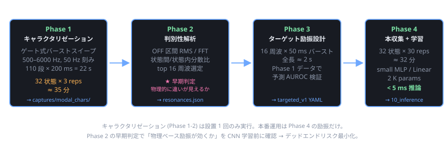

1. 問題設定
5 つの可動要素 (窓 a/b/c + 扉 AB/BC) の開閉組合せ 32 状態を、マイク 1 個 + スピーカ 1 個の アクティブ計測で判別する。
現在のアプローチ (pc/patterns.yaml の
multiband_default / chirp_200_6k):
- 広帯域励振を撃って、生 1024 bin スペクトルを CNN に投入
- 「どの特徴量が効くか」は CNN に学習させる ("shotgun + 学習" 方式)
問題点:
- 状態と関係ない周波数にもエネルギー・データ・学習量を費やしている
- なぜそう判別したかが不明瞭 (interpretable でない)
- データ効率が悪い (1 状態に 30 サンプル × 32 状態 = 960 サンプル必要)
2. 物理モデル: 状態と周波数特性の対応
1/N 模型の 3 部屋構造 (各室 30 cm 程度) の基本モード周波数:
f_lmn = (c/2) × √[(l/Lx)² + (m/Ly)² + (n/Lz)²]
c = 343 m/s, L = 0.3 m → f_100 ≈ 572 Hz
これは MAX98357A + 0.25W 8Ω スピーカが綺麗に出せる帯域 (500 Hz–6 kHz) と 一致する。状態変化が音響特性に与える効果は 4 通り:
| 状態変化 | 物理現象 | 周波数特性への影響 |
|---|---|---|
| 窓 a/b/c 単独開 | 壁の境界条件: 剛壁 (圧力腹) → 開口 (圧力節) | その壁を腹/節とするモードが半波長分シフト |
| 窓開 → 放射損失 | Q 値低下 | モード幅広化、RT60 短縮 |
| 扉 AB/BC 開 | 隣接室と音響結合 | 単一ピーク → 対称/反対称ペアに分裂 |
| 扉 + 窓組合せ | カップリング + 損失の相互作用 | 線形和ではない、非自明な周波数応答 |
特に扉開閉のモード分裂は判別性が高いと予想 — 単一ピークが 2 つに割れ、 しかも分裂幅が結合の強さに依存。
3. 励振方式の 3 系統
判別性ある周波数を発見するアクティブ計測には 3 系統の方法がある。
3.1 A 案: 連続 ESS + Farina 逆フィルタ
連続ログスイープを撃ち、PC 側で逆フィルタ畳み込みにより線形 RIR を抽出。
出力 y(t) = x(t) ⊗ h(t) x = ESS, h = 室内インパルス応答
逆フィルタ x_inv(t) = 時間反転(x(t)) × 振幅補正
y(t) ⊗ x_inv(t) = h(t) + 非線形歪み (時間軸で前後に分離)
| 評価項目 | 良し悪し |
|---|---|
| SNR | 高 (全帯域に長時間エネルギー投入) |
| 計算量 (PC 側) | FFT 2 回 + 複素積 + IFFT、scipy で 20 行程度 |
| 計算量 (MCU 側) | 不要 (キャラクタリゼーションは PC のみ) |
| 解釈性 | RIR が完全に取れるので透明性高 |
| 実装複雑度 | 逆フィルタ実装と log sweep 再生器が要る |
3.2 B 案: ゲート式トーンバーストスイープ
個別周波数を短時間だけ鳴らし、続く無音区間で純粋な残響を観測する。
時間軸:
[500Hz 100ms ON][100ms OFF][550Hz 100ms ON][100ms OFF]...
↑ ここの 100 ms は完全無音 = 残響だけが録れる
時間軸で励振 (ON) と残響観測 (OFF) を完全分離するので、 逆フィルタなしに「周波数 × 残響強度」マトリクスが直接取れる。
| 評価項目 | 良し悪し |
|---|---|
| SNR | 高 (ON/OFF 完全分離。OFF 中の SNR は環境雑音と量子化のみで律速) |
| 計算量 (PC 側) | OFF 区間切り出して RMS / FFT、これだけ |
| 解釈性 | 「この周波数を撃ったら、これだけ長く鳴る」が直接見える |
| 実装複雑度 | 既存の pulse 型 (pattern_lib.h) でそのまま実現可、ファーム拡張不要 |
| 所要時間 | 110 周波 × 200 ms = 22 秒/サンプル |
3.3 C 案: 広帯域クリック + 残響 FFT
1 ショット (~5 ms) の広帯域インパルスを撃ち、続く減衰テールを FFT。
| 評価項目 | 良し悪し |
|---|---|
| SNR | 低 (エネルギーが広く薄く分布。0.25W スピーカでは厳しい) |
| 計算量 | 最小 |
| 所要時間 | 最速 (~500 ms 一発) |
| 解釈性 | RIR が直接取れる |
3.4 採用方針: Phase 1 で B 案
Phase 1 (キャラクタリゼーション) では B 案を採用。理由:
| 観点 | B が勝つポイント |
|---|---|
| 実装複雑度 | patterns.yaml の pulse 型を流用するだけ。新しい型不要 |
| 解析複雑度 | 逆フィルタ実装不要。RMS と FFT だけで結果が出る |
| 解釈性 | 直接「周波数 vs 残響強度」が見える。物理的に分かりやすい |
| デバッグ性 | 32 状態 × 110 周波の応答テーブルが直接得られ、Excel / matplotlib で確認しやすい |
| 時間 | 22 s × 32 状態 × 3 reps = 約 35 分 — 1 回だけのキャラクタリゼーションなら全然許容 |
A 案 (ESS) は綺麗だが、キャラクタリゼーションは 1 回だけなので時間効率より単純さ優先。 Phase 4 (本番運用) も B 案の派生 (ターゲット周波数だけバースト) になるため、 解析パイプラインが Phase 1↔4 で共通化できる利点もある。
4. パイプライン全体像

| フェーズ | 励振 | 目的 | 出力 |
|---|---|---|---|
| Phase 1 | ゲート式バーストスイープ (110 周波 × 22s) | 全 32 状態の周波数応答テーブル | captures/modal_chars/ の WAV 群 |
| Phase 2 | (解析のみ) | 判別性高い周波数を特定 | resonances.json (top 16-32 周波) + 図 4 枚 |
| Phase 3 | (設計のみ) | ターゲット励振の設計 | patterns.yaml に targeted_v1 追加 |
| Phase 4 | targeted_v1 で本収集 → NN 学習 |
高効率モデル | runs/targeted_v1/best.{pt,onnx} |
5. Phase 1: ゲート式バーストスイープによるキャラクタリゼーション
5.1 ファーム側準備
firmware/shared/include/pattern_lib.h
の上限を引き上げる:
| 定数 | 現在 | 必要 |
|---|---|---|
MAX_TONES_PER_PULSE | 64 | 128 |
COL_WINDOW_MAX_MS | 2000 | 30000 |
これにより 110 段 (= 500 Hz から 6000 Hz まで 50 Hz 刻み) × 200 ms = 22 s の バースト列が 1 つの pulse パターンとして格納可能になる。
5.2 patterns.yaml への追加
- name: gated_sweep_500_6k_50step
type: pulse
repeat: 1
tones:
- {freq_hz: 500, on_ms: 100, off_ms: 100}
- {freq_hz: 550, on_ms: 100, off_ms: 100}
- {freq_hz: 600, on_ms: 100, off_ms: 100}
# ... 110 段
- {freq_hz: 6000, on_ms: 100, off_ms: 100}
5.3 plan.json による収集
32 状態 × 3 reps:
[
{"label": "s00000", "pins": {"a": 0, "b": 0, "c": 0, "AB": 0, "BC": 0 }, "pattern": "gated_sweep_500_6k_50step", "repeats": 3},
{"label": "s00001", "pins": {"a": 0, "b": 0, "c": 0, "AB": 0, "BC": 90}, "pattern": "gated_sweep_500_6k_50step", "repeats": 3},
{"label": "s00010", "pins": {"a": 0, "b": 0, "c": 0, "AB": 90, "BC": 0 }, "pattern": "gated_sweep_500_6k_50step", "repeats": 3},
// ... 全 32 通り
{"label": "s11111", "pins": {"a": 75, "b": 75, "c": 75, "AB": 90, "BC": 90}, "pattern": "gated_sweep_500_6k_50step", "repeats": 3}
]
ラベル命名規約: sABCDE (A=a, B=b, C=c, D=AB, E=BC, 1=開, 0=閉)。
所要時間: 22 s/sample × 96 sample + サーボ移動オーバーヘッド = 約 35 分 (実時間)。
5.4 マイク・スピーカ配置の固定
Phase 1 で得られる応答はマイク位置に強く依存する (標準波の節/腹で大きく変わる)。 Phase 4 と同じ物理配置で測定しないと、判別性周波数が無意味になる。
- マイク位置: 部屋 B (中央室) の天井 1 点固定
- スピーカ位置: 部屋 B の壁面 1 点固定
- 模型製作時にマウンタを物理的に固定する設計が前提
6. Phase 2: 判別性解析
6.1 解析スクリプト
pc/analysis/gated_sweep_analysis.py (新規):
"""
ゲート式バーストスイープの WAV を解析して、状態判別性の高い周波数を抽出。
入力: captures/modal_chars/sXXXXX/frame_NNNNNN.wav (96 ファイル)
pc/patterns.yaml の gated_sweep_500_6k_50step エントリ
出力: resonances.json
figures/per_state_decay_curves.svg
figures/mode_split_analysis.svg
figures/discriminability_ranking.svg
figures/q_factor_map.svg
"""
# 1. WAV をロード、tone リストから期待タイミングを再構築
# 2. 各 OFF 区間の最初 50 ms を切り出し
# 3. 各 OFF 区間で:
# decay_rms[freq_idx] = RMS(OFF[:50ms])
# decay_spectrum[freq_idx] = FFT(OFF, padded)
# 4. 32 状態 × 110 freq の decay_rms マトリクスを構築
# 5. 状態間分散 / 状態内分散 で判別性スコア
# inter_var(f) = Var across 32 states
# intra_var(f) = Mean of within-state Var (3 reps の平均)
# discriminability(f) = inter_var / (intra_var + ε)
# 6. discriminability(f) の上位 16 周波数を抽出 → resonances.json
6.2 期待される観察
- 部屋固有モード (例: 1.1 kHz, 2.3 kHz, ...) 付近に強い判別性ピーク
- 扉 AB 単独効果: あるモードの分裂幅 (~50-100 Hz) が AB 状態で変化
- 窓単独効果: 特定モードの Q 値変化 (ピーク幅)
6.3 早期判定基準
Phase 2 終了時に figures/per_state_decay_curves.svg で
「窓 a 単独開」「扉 AB 単独開」「全閉」の 3 状態を重ねて表示。
- 明らかに違う周波数がある → 全体方針成立、Phase 3 へ進む
- 状態間で違いが小さい → マイク/スピーカ位置を変えて再採取 or 模型形状見直しが必要 (CNN を訓練する前に物理層で判断できる)
7. Phase 3: ターゲット励振設計
7.1 設計スクリプト
pc/analysis/design_excitation.py (新規):
"""
resonances.json から top N=16 周波数を取り、本番運用用励振パターンを生成。
入力: resonances.json
出力: targeted_v1 エントリ (patterns.yaml に追記)
validation_report.txt (Phase 1 データで予測した AUROC)
"""
# 1. resonances.json の top 16 freqs を取得
# 2. 各 freq の周辺 ±20 Hz は短いミニスイープで掃く (Q 高いモードは 1 点だと位相不確実)
# 3. YAML エントリ生成:
# - name: targeted_v1
# type: pulse # 既存 pulse 型で表現可
# tones:
# - {freq_hz: 1078, on_ms: 50, off_ms: 80}
# - {freq_hz: 1342, on_ms: 50, off_ms: 80}
# ... 16 個
# total: 16 × 130 = 2080 ms
# 4. 検証: Phase 1 の 96 サンプルから targeted_v1 で得られるはずの応答を numpy で再合成
# → simple linear classifier で交差検証
# → AUROC を 6 ヘッドそれぞれで報告
7.2 「実機で targeted_v1 を撃つ前に性能予測がつく」利点
Phase 1 の生データから Phase 4 の応答を numpy で再合成できるので、 Phase 4 の本収集に進む前に「このターゲット選定で十分な AUROC が出るか」を確認できる。
予測 AUROC < 0.90 なら top N を 32 に増やす、選定方法を見直す等の調整を Phase 4 着手前に行える。
8. Phase 4: 本番収集と学習
8.1 本番収集
targeted_v1 で 32 状態 × 30 reps = 960 サンプル × 2 s ≈ 約 32 分。
[
{"label": "s00000", "pins": {"a": 0, ...}, "pattern": "targeted_v1", "repeats": 30},
// ... 32 通り
]
8.2 NN モデルの簡素化
入力次元が 1024 bin → 16 amplitude になるので、モデルを大幅に簡素化可能:
| 段階 | モデル | 入力次元 | パラメータ数 | 推論レイテンシ |
|---|---|---|---|---|
| 現状 (multiband + CNN) | 1D-CNN 5 層 + 6 head | 1024 | ~30 K | 30 ms |
| targeted_v1 + 小 MLP | 2 層 MLP + 6 head | 16 (or 32) | ~2 K | <5 ms |
| targeted_v1 + Linear | Logistic Regression × 6 | 16 | ~100 | <1 ms |
INT8 量子化後のサイズは MLP で約 2 KB、Linear で 0.2 KB に収まる。 Neutron NPU を使わずとも Cortex-M33 単体で動作可。
8.3 励振比較実験 (推奨)
pc/training/train.py
を 3 励振別に走らせて AUROC 比較:
| 励振 | データ量 | 推定 AUROC (any_open) | モデルサイズ | 推論レイテンシ |
|---|---|---|---|---|
multiband_default (現状) |
960 サンプル | ~0.85 (推測) | 30 K params | 30 ms |
chirp_200_6k |
960 サンプル | ~0.87 | 30 K params | 30 ms |
targeted_v1 |
960 サンプル | ~0.95+ (期待値) | ~2 K params | <5 ms |
これにより仮説 (物理ベース励振が CNN による特徴学習を上回る) を実証できる。
9. リスクと制約
| リスク | 対策 |
|---|---|
| マイク位置依存性 | 模型製作時にマイク位置を物理的に固定。Phase 1 と Phase 4 で完全同条件 |
| 同形状の窓 a/b/c 判別困難 | 窓のサイズ/位置を僅かに非対称にする、またはマイクを 1 つの窓に偏置 |
| 温度依存 | 音速は ~0.6 m/s/°C で変動 → 共鳴周波数も 5%/25°C シフト。 設置先で月次キャリブレーション or 温度センサ補正 |
| スピーカ非線形 | log sweep でハーモニクスが時間軸に分離されるので、Farina 逆フィルタを使えば 線形成分のみ抽出可。B 案 (バースト) は単一周波数なのでハーモニクスは 時間軸で分離せず別ピークとして出るが、判別性解析の段階で除去できる |
| Helmholtz 共鳴が使えない | 窓開口の Helmholtz 共鳴は 数十 Hz → MAX98357A + 0.25W スピーカでは出せない。 室内モード由来の特徴のみ使う |
| 設置先ごとの再キャリブレーション | Phase 1 + 2 を deployment 時に自動実行する仕組み (約 40 分) を後付け可能。 サーボが自動で 32 状態を巡回する設計はすでに 09_collector にある |
10. 実装着手順序
firmware/shared/include/pattern_lib.hの上限定数引き上げ (MAX_TONES_PER_PULSE,COL_WINDOW_MAX_MS) — 10 分pc/patterns.yamlにgated_sweep_500_6k_50step追加 — 5 分- 09_collector に push して
EMIT Nで 1 度試聴確認 — 5 分 plan.jsonで 32 状態 × 3 reps = 96 サンプル採取 — 約 35 分 (実時間)pc/analysis/gated_sweep_analysis.pyを実装 — 1-2 時間- 判定ポイント:
per_state_decay_curves.svgで物理的に違いが見えるか目視確認- YES → Phase 3 へ進む
- NO → センサ/模型構造を見直してから Step 4 やり直し
pc/analysis/design_excitation.pyを実装 +targeted_v1設計 — 1 時間targeted_v1で本収集 (32 状態 × 30 reps = 約 32 分)pc/training/train.pyで 3 励振の AUROC 比較- 勝者励振で本番学習 → ONNX → eIQ INT8 → 10_inference に統合
ステップ 1-6 までは 1 日で完結する。早期判定 (Step 6) で「物理ベース励振が効くか」を 確認してから Phase 3 以降の本格実装に進むことで、デッドエンドへの投資リスクを最小化する設計。
11. 関連ドキュメント
- docs/spec.html §4.3 — マルチタスク 1D-CNN の正本仕様
- docs/nn_design.html — NN アーキテクチャ詳細
- docs/mcu_deployment.html — eIQ Toolkit 経由のデプロイ
- pc/training/README — 学習パイプライン
- firmware/projects/09_collector/README — データ収集ファーム
- firmware/projects/10_inference/README — MCU 推論デモ
- pc/patterns.yaml — 励振パターン定義
- firmware/shared/include/pattern_lib.h — ファーム側パターン上限定数